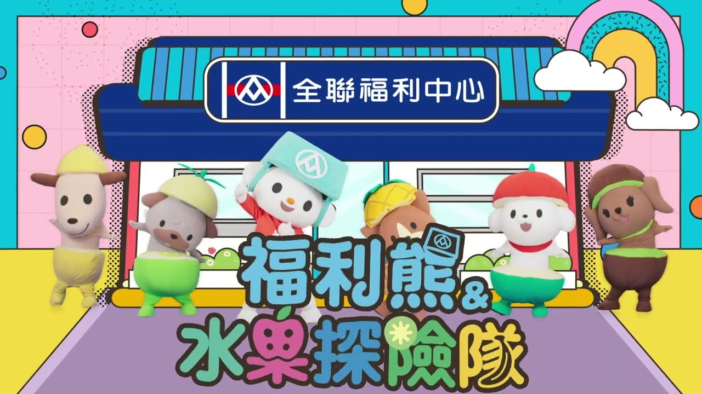
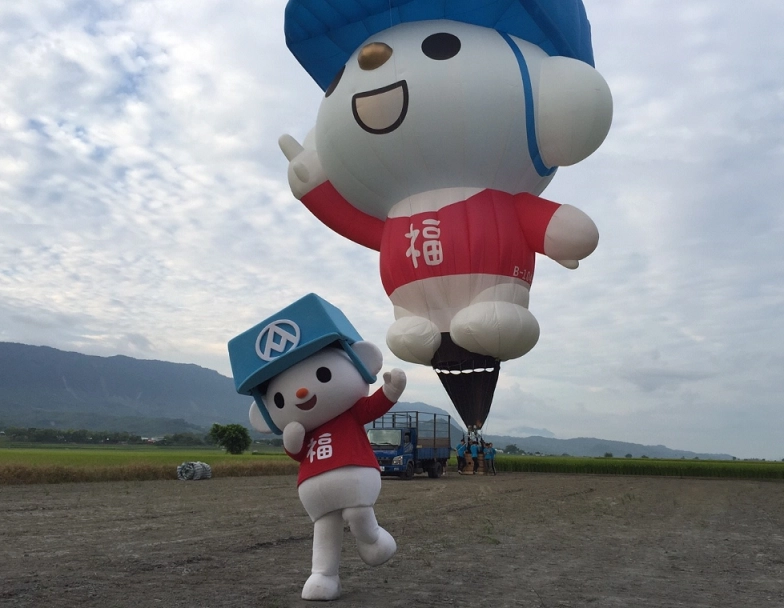
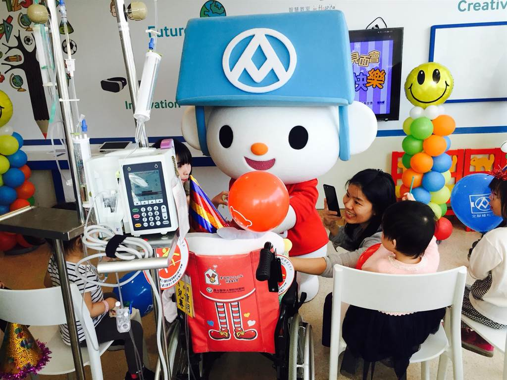

Free
bear

台灣全聯福利中心
形象代言吉祥物
發表
福利熊的推出始於2015年；全聯福利中心為了和代言人「全聯先生」聯手作形象代言而推出了該店第一代吉祥物「福利熊」，並於2015年1月27日起率先推出一套福利熊的限時免費LINE動態貼圖來對外發表。同年1月29日，福利熊在全聯舉辦的福袋販售活動上首次正式亮相。之後，該角普遍出現在全聯的各連鎖店面、獨家商品及相關活動中；其中，在2018年的全聯的福袋活動中，甚至還包括了價值360萬新台幣的「黃金福利熊」。
設計
福利熊由全聯聘請的日本專業團隊所設計；其定位主要用於擔任「情感面」的訊息傳達，而全聯先生則是負責對外「理性面」的溝通。
據全聯表示，和主力客層介於35至55歲女性的全聯先生不同，福利熊的設計主因是來自因應網路時代的來臨，以及加深與年輕客層的連結。福利熊被設定為好奇心強、愛逛超市和做菜的小男孩，平時喜歡到全聯福利中心買東西，並會即時掌握該店的新商品及特賣會訊息；口頭禪為「熊好呷、熊蓋讚」。在外貌上，該角是一隻擬人化的白熊，其身高為兩個麵包長，體重與購物推車相當，平時戴著的淺藍色帽子能拿下來作為購物袋使用；福利熊在設定上是從店內與芭樂擺在一起的魔法葫蘆中誕生，在此出生的牠便將全聯當成故鄉，並夢想成為店內的一名模範店員。此外，福利熊的造型（如帽子、衣服等）會隨著參與的活動不同而作改變。

▸ 福利熊 水果探險隊。
音樂
全聯福利中心斥資百萬於2017年推出了福利熊的首支主題曲及MV〈One Two福利熊〉，該歌的部分旋律已於同年10月初各全聯門市播放。主題曲由渡辺禎史作曲，原創作詞者為島森奈津子，而中文詞則由台灣集思廣告負責。〈One Two福利熊〉後在全聯官方的YouTube頻道及LINE官方帳號上線，並於首日累積達上萬次的瀏覽數
其他活動
2017台灣熱氣球嘉年華
福利熊亦現身於2017年的台灣熱氣球嘉年華上，並首度對外釋出的福利熊造型熱氣球（高21公尺，約7層樓高）；這也在台灣的造型熱氣球中，僅次於觀光局愛心球的第二顆造型球，以及首顆企業吉祥物造型球，全聯福利中心也是國內首家製作造型球的民營企業。

▸ 適逢全聯20歲，福利熊也要做件大事！展開「熊一輩子要爬一次玉山」的任務。
2018兒童節
於2018年的兒童節中，全聯除了舉辦「福利熊夢想繪畫大賽」外還讓福利熊前往台北醫學大學附設醫院舉辦見面會，並與現場20多名小孩們進行互動。

▸ 福利熊今赴北醫附醫發送氣球與禮物，與小朋友共度兒童節。
2018年6月，身穿登山服的福利熊為了「熊一輩子要爬一次玉山 」的計畫而陪同全聯一級長官登上玉山山頂，經過2天艱辛的路程後，終於成為國內第一隻在玉山之巔留影的企業吉祥物。在此前，為了登頂的主管們及公司內部登山社都曾進行過嚴密的訓練。雖然看過其過程影片的觀眾們較為佩服穿著福利熊布偶裝的工作人員。之後，同樣造型的福利熊又於7月22日在台中中港路新光三越的Timberland門市中擔任一日店長。
▸ 適逢全聯20歲，福利熊也要做件大事！展開「熊一輩子要爬一次玉山」的任務。
反響
福利熊推出後獲得了成功的迴響，其中LINE貼圖曾創下超過500萬人次的下載量，並使許多人因此成為全聯官方帳號的好友。福利熊推出的一年後，利用兩次貼圖來成功吸引810萬人成為全聯官方帳號的好友，且其中動態貼圖「福利熊愛說話」的使用次數已超過了3億次。全聯分析，其好友年齡集中落於45歲以上，與該店的消費者年齡層相符
▸ 福利熊與蘋狗開心跳舞，貼圖超級萌。